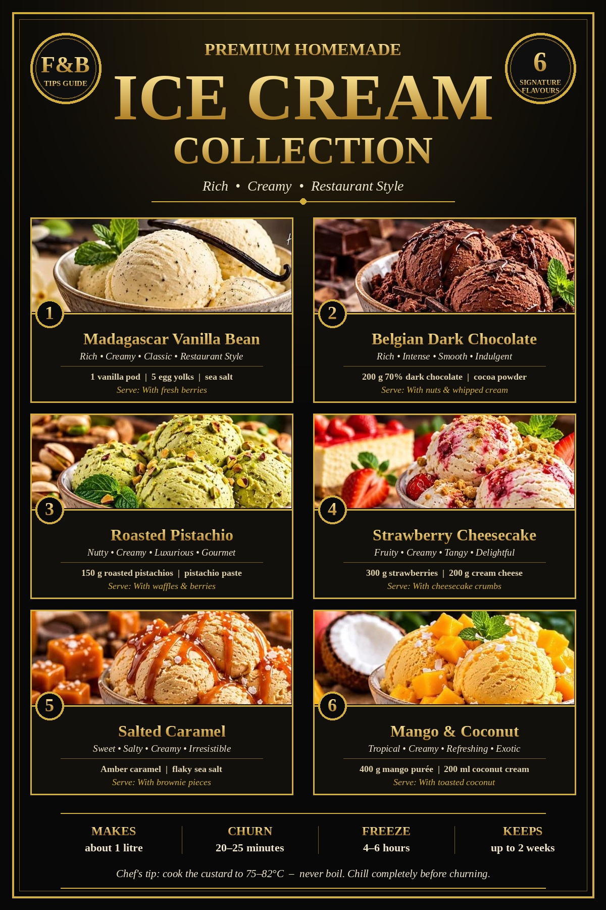

Great ice cream is one of the most forgiving ways to show guests that a kitchen cares about the details. It needs no exotic equipment, only good dairy, a thermometer and patience. Every recipe in this guide uses the same classic custard base, so once you have learned the method for one flavour, you can make all six with confidence and quickly invent your own.
The six flavours here are Madagascar vanilla bean, Belgian dark chocolate, roasted pistachio, strawberry cheesecake, salted caramel and mango & coconut. Each makes about one litre. Before the recipes, we will look at why the method works, because understanding the reason behind each step is what separates a cook who follows a recipe from one who can fix a batch that goes wrong.
Why the Custard Base Works
All six recipes start with a French-style custard, also called a crème anglaise base. It is made from cream, milk, egg yolks and sugar, cooked gently until it thickens. This is the foundation of restaurant-style ice cream, and each ingredient has a job.
- Heavy cream (35% fat): Fat is what makes ice cream feel rich and smooth. It coats the tongue and interferes with the growth of ice crystals. Using full-fat cream is the single biggest step toward a creamy result.
- Whole milk: Adds liquid and milk solids without making the mixture too heavy. It keeps the finished ice cream scoopable instead of buttery and dense.
- Egg yolks: Yolks contain natural emulsifiers that bind fat and water together. They give the custard body and a velvety texture, and they help the ice cream hold its shape as it melts.
- Sugar: Sugar sweetens, but it also lowers the freezing point of the mixture. Too little sugar and the ice cream freezes rock hard. Too much and it will never firm up properly.
- Sea salt: A pinch does not make ice cream salty. It sharpens flavour and balances sweetness.
The five stages of the method
- Warm the dairy. Heat the milk and cream until warm, not boiling. Boiling can scorch the milk and spoil the delicate flavour.
- Whisk the yolks and sugar until pale and creamy. This dissolves the sugar and prepares the yolks to receive the heat.
- Temper the eggs. Pour the warm dairy into the yolks slowly while whisking constantly. Adding hot liquid all at once would scramble the eggs, so the gradual addition raises their temperature safely.
- Cook the custard over low heat, stirring constantly, until it thickens and coats the back of a spoon. The target temperature is 75–82°C. Never let it boil. A simple test is to draw a finger across the spoon: if the line holds clean, the custard is ready.
- Strain, chill, churn, freeze. Strain through a fine sieve, chill for at least four hours or overnight, churn for 20–25 minutes in an ice cream maker, then freeze in an airtight container for 4–6 hours until firm.
The long chill matters more than most people expect. A fully cold base churns faster, incorporates air more evenly and produces smaller ice crystals, and smaller crystals mean a smoother mouthfeel.
Equipment Checklist
You need a heavy-bottomed saucepan, a large mixing bowl, a balloon whisk, a wooden spoon or heatproof spatula, a fine sieve and a probe or digital thermometer. An ice cream maker is the easiest route, and the bowl must be frozen solid before you start, so freeze it the day before. Finally, keep an airtight, shallow freezer container ready. A shallow container freezes more evenly than a deep one.
1. Madagascar Vanilla Bean
Vanilla is the benchmark flavour. Because it is so simple, there is nowhere to hide, which is why the quality of the vanilla and the dairy shows so clearly.
Ingredients
- 500 ml heavy cream (35% fat)
- 250 ml whole milk
- 5 egg yolks (about 100 g)
- 150 g sugar
- 1 Madagascar vanilla bean pod (or 2 tsp vanilla extract)
- A pinch of sea salt
Method
- Combine the milk and cream in a saucepan with the split vanilla bean and its seeds. Heat over medium heat until warm, not boiling. Remove from the heat and let it infuse for 15–20 minutes.
- Whisk the egg yolks and sugar in a bowl until pale and creamy.
- Temper the eggs by pouring the warm milk mixture slowly into the yolks while whisking continuously.
- Return the mixture to the pan and cook on low heat, stirring constantly, until it thickens and coats the back of a spoon (75–82°C).
- Strain through a fine sieve into a clean bowl and remove the vanilla pod. Cover and chill for at least 4 hours or overnight.
- Churn in an ice cream maker for about 20–25 minutes until creamy and soft.
- Transfer to an airtight container and freeze for 4–6 hours until firm.
- Scoop and serve with vanilla bean, fresh mint or your favourite toppings.
2. Belgian Dark Chocolate
This is the choice for chocolate lovers. Using real chopped chocolate together with cocoa powder gives both depth and a clean, bitter-sweet finish.
Ingredients
- 500 ml heavy cream (35% fat)
- 250 ml whole milk
- 200 g dark chocolate (70% cocoa), chopped
- 2 tbsp cocoa powder (10 g)
- 5 egg yolks (about 100 g)
- 150 g sugar
- 1 tsp vanilla extract
- A pinch of sea salt
Method
- Combine the milk and cream in a saucepan and heat over medium heat until warm, not boiling.
- Whisk the egg yolks and sugar until pale, thick and creamy.
- Temper the eggs by pouring the warm milk mixture slowly into the yolks while whisking continuously.
- Return the mixture to the pan and cook on low heat, stirring constantly, until it coats the back of a spoon (75–82°C).
- Remove from the heat. Add the chopped dark chocolate and cocoa powder and stir until completely melted and smooth.
- Stir in the vanilla extract and a pinch of salt. Let the mixture cool, then refrigerate for at least 4 hours or overnight.
- Churn according to the manufacturer's instructions (about 20–25 minutes).
- Freeze in an airtight container for 4–6 hours until firm. Serve with chocolate shavings or your favourite toppings.
3. Roasted Pistachio
Roasting the nuts before grinding releases their oils and aroma. Adding a little pistachio paste deepens both flavour and colour, so the ice cream tastes as green as it looks.
Ingredients
- 500 ml heavy cream (35% fat)
- 250 ml whole milk
- 150 g roasted pistachios (plus 2 tbsp chopped for topping)
- 2 tbsp pistachio paste (30 g)
- 5 egg yolks (about 100 g)
- 150 g sugar
- 1 tsp vanilla extract
- A pinch of sea salt
Method
- Lightly roast the pistachios in a dry pan for 5–7 minutes until fragrant. Cool, then grind into a fine paste, keeping a few chopped for topping.
- Heat the milk and cream in a saucepan over medium heat until warm, not boiling.
- Whisk the egg yolks and sugar until pale and creamy.
- Pour the warm milk mixture slowly into the yolks while whisking. Return to the pan and cook on low heat, stirring constantly, until it coats the back of a spoon (75–82°C).
- Remove from the heat. Stir in the pistachio paste, the vanilla extract and a pinch of salt.
- Strain through a fine sieve into a clean bowl. Cover and chill for at least 4 hours or overnight.
- Churn according to the manufacturer's instructions (about 20–25 minutes).
- Freeze in an airtight container for 4–6 hours until firm. Scoop and serve, garnished with chopped pistachios.
4. Strawberry Cheesecake
This flavour turns a classic dessert into a scoop. Cream cheese adds a gentle tang, the strawberry sauce is swirled in rather than mixed, and biscuit crumbs supply the crunch of a cheesecake base.
Ingredients
- 500 ml heavy cream (35% fat)
- 250 ml whole milk
- 200 g cream cheese, softened
- 300 g fresh strawberries, pureed
- 150 g sugar for the custard, plus 50 g for the strawberry sauce
- 1 tsp vanilla extract
- 100 g biscuit crumbs (graham or digestive)
- Vanilla custard base as in recipe 1 (5 egg yolks)
Method
- Cook the strawberries with 50 g sugar until thick. Cool completely.
- Prepare the vanilla custard base exactly as in recipe 1.
- Blend the softened cream cheese until smooth, then fold it into the custard.
- Layer in the strawberry sauce and swirl gently. Do not mix completely, so the ribbons stay visible.
- Fold in the crushed biscuit crumbs, reserving some for topping.
- Churn for 20–25 minutes until creamy and soft.
- Transfer to an airtight container and freeze for 4–6 hours until firm.
- Scoop and serve, garnished with extra biscuit crumbs and fresh strawberries.
5. Salted Caramel
The caramel here is made directly in the pan, then built into the custard. The deeper the amber colour, the more complex the flavour, but there is a fine line before bitterness arrives.
Ingredients
- 500 ml heavy cream (35% fat)
- 250 ml whole milk
- 150 g sugar (for the caramel)
- 5 egg yolks (about 100 g)
- 50 g unsalted butter
- 1 tsp vanilla extract
- 1 tsp flaky sea salt, or to taste
Method
- In a medium saucepan, heat the sugar over medium heat, stirring gently, until it melts and turns amber. Do not burn it.
- Remove from the heat and carefully add the butter. Slowly pour in the warm cream and milk, being careful because it will bubble violently. Stir until smooth.
- In a bowl, whisk the egg yolks until pale and creamy.
- Slowly pour the warm caramel mixture into the yolks while whisking continuously to prevent curdling.
- Return to the pan and cook on low heat, stirring constantly, until it thickens and coats the back of a spoon (75–82°C).
- Remove from the heat. Stir in the vanilla extract and flaky sea salt. Let it cool completely, then chill.
- Churn for 20–25 minutes until creamy and soft.
- Freeze in an airtight container for 4–6 hours until firm. Scoop and serve, drizzled with extra caramel and a pinch of sea salt.
6. Mango & Coconut
A natural choice for hotels and restaurants in India and the Gulf, where good mangoes are plentiful. Coconut cream lends richness, and a little lime juice lifts the fruit and keeps the sweetness from feeling flat.
Ingredients
- 400 g ripe mango puree (2–3 ripe mangoes)
- 200 ml full-fat coconut cream
- 300 ml whipping cream (35% fat)
- 250 ml whole milk
- 120 g sugar
- 1 tbsp lime juice (optional)
- 1 tsp vanilla extract
- 2 tbsp desiccated coconut (optional, for texture)
- Egg yolks for the custard: use 5, as in the other recipes
Method
- Peel and chop the ripe mangoes and blend until smooth. For an extra-smooth texture, strain the puree.
- Combine the whole milk and coconut cream in a saucepan and heat over medium heat until warm, not boiling.
- Whisk the egg yolks and sugar until pale and creamy.
- Pour the warm milk mixture slowly into the yolks while whisking. Return to the pan and cook on low heat, stirring constantly, until it coats the back of a spoon (75–82°C).
- Remove from the heat. Stir in the mango puree, lime juice and vanilla extract. Mix well.
- Transfer to a clean bowl, cover and refrigerate for at least 4 hours or overnight until completely chilled.
- Churn for 20–25 minutes until creamy and soft.
- Freeze in an airtight container for 4–6 hours until firm. Scoop and serve, garnished with mango chunks and desiccated coconut.
Troubleshooting: Fixing the Common Problems
The ice cream is icy or grainy
The base was probably not cold enough before churning, or the mixture contained too little fat or sugar. Chill the base for the full four hours or overnight, use full-fat cream, and avoid cutting the sugar. Storing in a deep container that freezes slowly can also grow larger crystals, so use a shallow one and press baking paper onto the surface.
The custard looks curdled
The eggs were overheated or the dairy was added too quickly. If it has only just started to split, pour it immediately through a fine sieve into a cold bowl and whisk hard, or blend briefly with a stick blender. Next time, add the warm milk in a thin stream and keep the heat low.
The custard will not thicken
Keep cooking gently and stirring. It usually takes several minutes. Use the thermometer rather than guessing, and aim for 75–82°C. Going past that range risks scrambling, so stop once you are inside it.
The ice cream is too hard to scoop
This is a sign of too little sugar or fat, or of the freezer being very cold. Let the container rest at room temperature for five to ten minutes before scooping, and dip the scoop in warm water between portions.
The flavour is flat
Check the salt first. A pinch lifts everything. Cold dulls flavour, so a base that tastes only just right when warm may taste weak once frozen. Season slightly bolder than feels natural, and use the best vanilla, chocolate, nuts and fruit you can get.
Food Safety and Storage
Because the recipes use egg yolks, the custard must be cooked properly. Reaching 75–82°C is what makes the base safe as well as thick, so use a clean probe thermometer. After cooking, cool the base quickly, for example by standing the bowl in iced water, and then refrigerate. Keep it covered so it does not absorb fridge odours, and do not leave it at room temperature for long.
Use clean, sanitised equipment for every stage, and keep ready-to-serve ice cream away from raw foods in the freezer. Label every container with the flavour and the date of production. The recipes on the poster are designed to be kept in an airtight container for up to two weeks, and the quality is best when eaten within that window. For commercial kitchens, follow your property's HACCP plan and local regulations, which may set stricter limits on shelf life and temperature.
Serving Ideas for Hotels and Restaurants
Ice cream is a high-margin dessert. A litre of base costs little, yields roughly ten to twelve generous scoops, and can be dressed up in many different ways. A few ideas that work well on a menu:
- Trio of scoops: Vanilla, chocolate and pistachio on a chilled plate, served with a crisp wafer. It is simple, familiar and looks generous.
- Warm and cold contrast: Vanilla beside a warm brownie or fruit tart, or salted caramel over a slice of apple pie.
- Affogato-style: A scoop of vanilla or chocolate with a shot of hot espresso poured over at the table.
- Seasonal fruit: Mango & coconut with fresh mango cubes during the season, strawberry cheesecake with fresh berries for brunch.
- Sundae and shake menus: Chocolate sauce, caramel and nuts, and whipped cream turn the same base into several menu items.
Presentation matters. Chill the bowls or plates beforehand, use a warm scoop for neat, round portions, and finish each dish with one garnish that tells the guest what is inside, such as a mint leaf, a few chopped pistachios or a sprinkle of flaky salt. Train the service team to describe each flavour in a sentence. Guests order more dessert when they can picture the taste.
A Final Word
Once the custard method becomes second nature, the possibilities are endless. Swap the vanilla for cardamom, saffron or coffee. Replace pistachio with almond or hazelnut. Fold in cookie pieces, brittle or fruit ripple. The structure stays the same: good dairy, careful heat, a long chill, and a gentle churn. Master that, and every flavour you try will be a quality product.
